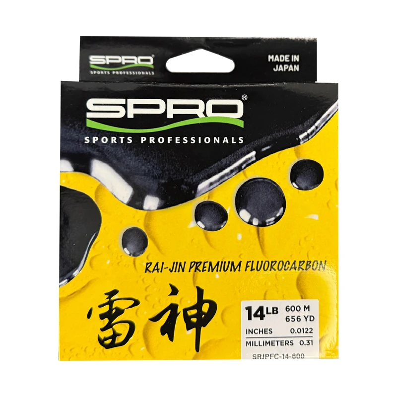

SPRO Rai-Jin Premium Fluorocarbon
Diameter chart, reel capacity & backing guide

Rai-Jin is SPRO's premium Japanese fluorocarbon mainline. The 2026 official catalog publishes 6-20 lb millimeter diameters, and the current product variants pair every listed strength with 150 m and 600 m packages.
- Construction
- Japanese premium fluorocarbon mainline
- Listed strengths
- 6-20 lb
- Line type
- Fluorocarbon main line
Is Rai-Jin Premium Fluorocarbon right for your setup?
Rai-Jin is an option for anglers comparing a fluorocarbon working line for fresh water and power-fishing presentations. SPRO describes toughness and sensitivity, but the purchase decision still starts with diameter, manageable strength and enough working length. A 600 m spool is useful for multiple planned fills rather than an automatic requirement for a premium line.
How much Rai-Jin Premium Fluorocarbon will fit?
Calculated estimates, not measured fills. Stop at the reel manufacturer's fill level even if some line remains.
SPRO Rai-Jin Premium Fluorocarbon diameter chart
Only the source-reviewed strengths and package combinations listed below are included. Converted measurements are identified in the source notes.
| Strength | Inches | mm | Spools (m / yd) |
|---|---|---|---|
| 0.008071 | 0.205 | 150 m (about 164.041995 yd), 600 m (about 656.167979 yd) | |
| 0.009252 | 0.235 | 150 m (about 164.041995 yd), 600 m (about 656.167979 yd) | |
| 0.010236 | 0.260 | 150 m (about 164.041995 yd), 600 m (about 656.167979 yd) | |
| 0.01122 | 0.285 | 150 m (about 164.041995 yd), 600 m (about 656.167979 yd) | |
| 0.012205 | 0.310 | 150 m (about 164.041995 yd), 600 m (about 656.167979 yd) | |
| 0.012992 | 0.330 | 150 m (about 164.041995 yd), 600 m (about 656.167979 yd) | |
| 0.014567 | 0.370 | 150 m (about 164.041995 yd), 600 m (about 656.167979 yd) |
Choosing your Rai-Jin Premium Fluorocarbon strength
The 6 and 8 lb catalog rows are 0.205 and 0.235 mm. The 6 lb size is verified even though the legacy ReelCalc inventory starts at 8 lb.
For 10, 12, 14 and 16 lb, the official catalog lists 0.260, 0.285, 0.310 and 0.330 mm. Choose using those exact values instead of a generic fluorocarbon conversion.
The 20 lb row is 0.370 mm. A mathematically adequate capacity on a small spinning reel does not establish comfortable handling at that diameter.
Specification-based guidance, not a ReelCalc hands-on performance test. Capacity results are estimates, not measured fills.
Want a guided recommendation?
Continue in the Setup WizardSame pound test, different diameters
At your selected strength
Loading diameter comparisons...
What changes with another line?
Nearby diameters in the line database
| Line | Strength | Inches | Difference |
|---|---|---|---|
| Loading line database... | |||
Backing, working line & leaders
Separate catalog diameter from current packaging
The 2026 catalog provides the diameter chart and describes 150 m. Current official variants also identify 600 m packages for the same strengths; both source contexts are retained.
Plan a continuous working section
Keep any backing connection below normal casting and fish-run depth. Check whether one 150 m package provides that much line before assuming a full fill.
Do not merge it with Gouken
A matching diameter does not mean the two SPRO fluorocarbon families are interchangeable. Keep Rai-Jin package identity when selecting the working line and retail spool.
How Much Fits on These Reels?
Estimated full-spool capacity for the Rai-Jin Premium Fluorocarbon strength selected above, with no backing. These are calculated examples, not physical tests or recommendations for every pairing.
Loading capacity estimates...
Rai-Jin Premium Fluorocarbon questions, answered
Where do the diameters come from?
The visually reviewed Rai-Jin table on printed page 14 of SPRO's 2026 catalog, PDF page 16. Current product variants supply the meter-length combinations.
Is 600 m verified even though the catalog says 150 m?
Yes. The current official product variants explicitly include 600 m versions of each listed strength. The catalog is used for diameters, not to erase those current packages.
Is there a verified 25 lb Rai-Jin row?
Not in the reviewed current Rai-Jin catalog table or product variants. Gouken's 25 lb variant must not be imported into this model.
How much Rai-Jin Premium Fluorocarbon will fit my reel?
Use the exact strength and the reel's published capacity. Pound test is not a fixed diameter, so equal-strength products can produce different fill estimates.
Is one 150 m package enough?
Only when it covers the planned working length and an appropriate reserve. Backing can fill unused volume, but cannot supply more working line for long casts, deep drops or fish runs.
Specifications & sources
Official sources retrieved September 13, 2026. Millimeter diameters are published; inches are converted by dividing by 25.4. Diameters from visually reviewed 2026 catalog, PDF page 16 / printed page 14. Current web variants verify 150 m and 600 m. Inches and yards are explicit conversions. Package options are not a stock or price guarantee.
Calculations use the catalog's listed inch diameters. Published inch and millimeter values may differ slightly because of rounding.
- Official SPRO specification source Exact numeric rows, package identity and model positioning. Saved source evidence is retained in the Group B research pack.
- Official SPRO specification source Exact numeric rows, package identity and model positioning. Saved source evidence is retained in the Group B research pack.